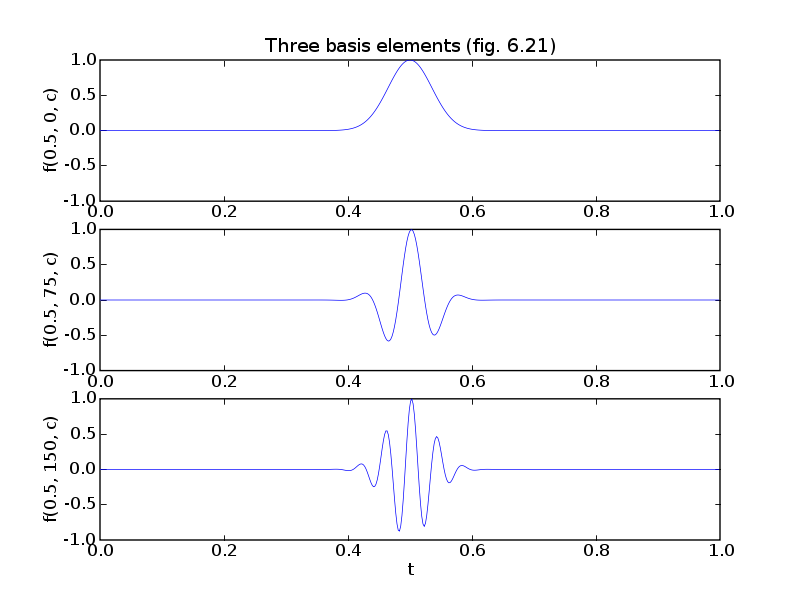
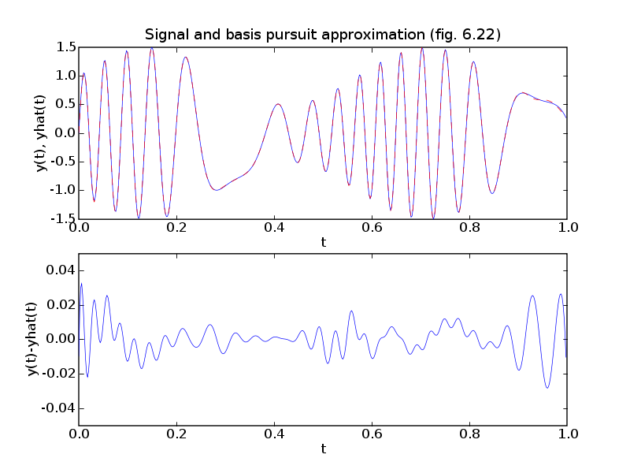

Basis pursuit (fig 6.21-6.23)¶



# Figures 6.21-23, pages 335-337.
# Basis pursuit.
from cvxopt import matrix, mul, div, cos, sin, exp, sqrt
from cvxopt import blas, lapack, solvers
try: import pylab
except ImportError: pylab_installed = False
else: pylab_installed = True
# Basis functions are Gabor pulses: for k = 0,...,K-1,
#
# exp(-(t - k * tau)^2/sigma^2 ) * cos (l*omega0*t), l = 0,...,L
# exp(-(t - k * tau)^2/sigma^2 ) * sin (l*omega0*t), l = 1,...,L
sigma = 0.05
tau = 0.002
omega0 = 5.0
K = 501
L = 30
N = 501 # number of samples of each signal in [0,1]
# Build dictionary matrix
ts = (1.0/N) * matrix(range(N), tc='d')
B = ts[:, K*[0]] - tau * matrix(range(K), (1,K), 'd')[N*[0],:]
B = exp(-(B/sigma)**2)
A = matrix(0.0, (N, K*(2*L+1)))
# First K columns are DC pulses for k = 0,...,K-1
A[:,:K] = B
for l in range(L):
# Cosine pulses for omega = (l+1)*omega0 and k = 0,...,K-1.
A[:, K+l*(2*K) : K+l*(2*K)+K] = mul(B, cos((l+1)*omega0*ts)[:, K*[0]])
# Sine pulses for omega = (l+1)*omega0 and k = 0,...,K-1.
A[:, K+l*(2*K)+K : K+(l+1)*(2*K)] = \
mul(B, sin((l+1)*omega0*ts)[:,K*[0]])
if pylab_installed:
pylab.figure(1, facecolor='w')
pylab.subplot(311)
# DC pulse for k = 250 (tau = 0.5)
pylab.plot(ts, A[:,250])
pylab.ylabel('f(0.5, 0, c)')
pylab.axis([0, 1, -1, 1])
pylab.title('Three basis elements (fig. 6.21)')
# Cosine pulse for k = 250 (tau = 0.5) and l = 15 (omega = 75)
pylab.subplot(312)
pylab.ylabel('f(0.5, 75, c)')
pylab.plot(ts, A[:, K + 14*(2*K) + 250])
pylab.axis([0, 1, -1, 1])
pylab.subplot(313)
# Cosine pulse for k = 250 (tau = 0.5) and l = 30 (omega = 150)
pylab.plot(ts, A[:, K + 29*(2*K) + 250])
pylab.ylabel('f(0.5, 150, c)')
pylab.axis([0, 1, -1, 1])
pylab.xlabel('t')
# Signal.
y = mul( 1.0 + 0.5 * sin(11*ts), sin(30 * sin(5*ts)))
# Basis pursuit problem
#
# minimize ||A*x - y||_2^2 + ||x||_1
#
# minimize x'*A'*A*x - 2.0*y'*A*x + 1'*u
# subject to -u <= x <= u
#
# Variables x (n), u (n).
m, n = A.size
r = matrix(0.0, (m,1))
q = matrix(1.0, (2*n,1))
blas.gemv(A, y, q, alpha = -2.0, trans = 'T')
def P(u, v, alpha = 1.0, beta = 0.0):
"""
Function and gradient evaluation of
v := alpha * 2*A'*A * u + beta * v
"""
blas.gemv(A, u, r)
blas.gemv(A, r, v, alpha = 2.0*alpha, beta = beta, trans = 'T')
def G(u, v, alpha = 1.0, beta = 0.0, trans = 'N'):
"""
v := alpha*[I, -I; -I, -I] * u + beta * v (trans = 'N' or 'T')
"""
blas.scal(beta, v)
blas.axpy(u, v, n = n, alpha = alpha)
blas.axpy(u, v, n = n, alpha = -alpha, offsetx = n)
blas.axpy(u, v, n = n, alpha = -alpha, offsety = n)
blas.axpy(u, v, n = n, alpha = -alpha, offsetx = n, offsety = n)
h = matrix(0.0, (2*n,1))
# Customized solver for the KKT system
#
# [ 2.0*A'*A 0 I -I ] [x[:n] ] [bx[:n] ]
# [ 0 0 -I -I ] [x[n:] ] = [bx[n:] ].
# [ I -I -D1^-1 0 ] [z[:n] ] [bz[:n] ]
# [ -I -I 0 -D2^-1 ] [z[n:] ] [bz[n:] ]
#
# where D1 = W['di'][:n]**2, D2 = W['di'][:n]**2.
#
# We first eliminate z and x[n:]:
#
# ( 2*A'*A + 4*D1*D2*(D1+D2)^-1 ) * x[:n] =
# bx[:n] - (D2-D1)*(D1+D2)^-1 * bx[n:]
# + D1 * ( I + (D2-D1)*(D1+D2)^-1 ) * bz[:n]
# - D2 * ( I - (D2-D1)*(D1+D2)^-1 ) * bz[n:]
#
# x[n:] = (D1+D2)^-1 * ( bx[n:] - D1*bz[:n] - D2*bz[n:] )
# - (D2-D1)*(D1+D2)^-1 * x[:n]
#
# z[:n] = D1 * ( x[:n] - x[n:] - bz[:n] )
# z[n:] = D2 * (-x[:n] - x[n:] - bz[n:] ).
#
#
# The first equation has the form
#
# (A'*A + D)*x[:n] = rhs
#
# and is equivalent to
#
# [ D A' ] [ x:n] ] = [ rhs ]
# [ A -I ] [ v ] [ 0 ].
#
# It can be solved as
#
# ( A*D^-1*A' + I ) * v = A * D^-1 * rhs
# x[:n] = D^-1 * ( rhs - A'*v ).
S = matrix(0.0, (m,m))
Asc = matrix(0.0, (m,n))
v = matrix(0.0, (m,1))
def Fkkt(W):
# Factor
#
# S = A*D^-1*A' + I
#
# where D = 2*D1*D2*(D1+D2)^-1, D1 = d[:n]**2, D2 = d[n:]**2.
d1, d2 = W['di'][:n]**2, W['di'][n:]**2
# ds is square root of diagonal of D
ds = sqrt(2.0) * div( mul( W['di'][:n], W['di'][n:]), sqrt(d1+d2) )
d3 = div(d2 - d1, d1 + d2)
# Asc = A*diag(d)^-1/2
blas.copy(A, Asc)
for k in range(m):
blas.tbsv(ds, Asc, n=n, k=0, ldA=1, incx=m, offsetx=k)
# S = I + A * D^-1 * A'
blas.syrk(Asc, S)
S[::m+1] += 1.0
lapack.potrf(S)
def g(x, y, z):
x[:n] = 0.5 * ( x[:n] - mul(d3, x[n:]) + \
mul(d1, z[:n] + mul(d3, z[:n])) - \
mul(d2, z[n:] - mul(d3, z[n:])) )
x[:n] = div( x[:n], ds)
# Solve
#
# S * v = 0.5 * A * D^-1 * ( bx[:n]
# - (D2-D1)*(D1+D2)^-1 * bx[n:]
# + D1 * ( I + (D2-D1)*(D1+D2)^-1 ) * bz[:n]
# - D2 * ( I - (D2-D1)*(D1+D2)^-1 ) * bz[n:] )
blas.gemv(Asc, x, v)
lapack.potrs(S, v)
# x[:n] = D^-1 * ( rhs - A'*v ).
blas.gemv(Asc, v, x, alpha=-1.0, beta=1.0, trans='T')
x[:n] = div(x[:n], ds)
# x[n:] = (D1+D2)^-1 * ( bx[n:] - D1*bz[:n] - D2*bz[n:] )
# - (D2-D1)*(D1+D2)^-1 * x[:n]
x[n:] = div( x[n:] - mul(d1, z[:n]) - mul(d2, z[n:]), d1+d2 )\
- mul( d3, x[:n] )
# z[:n] = D1^1/2 * ( x[:n] - x[n:] - bz[:n] )
# z[n:] = D2^1/2 * ( -x[:n] - x[n:] - bz[n:] ).
z[:n] = mul( W['di'][:n], x[:n] - x[n:] - z[:n] )
z[n:] = mul( W['di'][n:], -x[:n] - x[n:] - z[n:] )
return g
x = solvers.coneqp(P, q, G, h, kktsolver = Fkkt)['x'][:n]
I = [ k for k in range(n) if abs(x[k]) > 1e-2 ]
xls = +y
lapack.gels(A[:,I], xls)
ybp = A[:,I]*xls[:len(I)]
print("Sparse basis contains %d basis functions." %len(I))
print("Relative RMS error = %.1e." %(blas.nrm2(ybp-y) / blas.nrm2(y)))
if pylab_installed:
pylab.figure(2, facecolor='w')
pylab.subplot(211)
pylab.plot(ts, y, '-', ts, ybp, 'r--')
pylab.xlabel('t')
pylab.ylabel('y(t), yhat(t)')
pylab.axis([0, 1, -1.5, 1.5])
pylab.title('Signal and basis pursuit approximation (fig. 6.22)')
pylab.subplot(212)
pylab.plot(ts, y-ybp, '-')
pylab.xlabel('t')
pylab.ylabel('y(t)-yhat(t)')
pylab.axis([0, 1, -0.05, 0.05])
pylab.figure(3, facecolor='w')
pylab.subplot(211)
pylab.plot(ts, y, '-')
pylab.xlabel('t')
pylab.ylabel('y(t)')
pylab.axis([0, 1, -1.5, 1.5])
pylab.title('Signal and time-frequency plot (fig. 6.23)')
pylab.subplot(212)
omegas, taus = [], []
for i in I:
if i < K:
omegas += [0.0]
taus += [i*tau]
else:
l = (i-K)/(2*K)+1
k = ((i-K)%(2*K)) %K
omegas += [l*omega0]
taus += [k*tau]
pylab.plot(ts, 150*abs(cos(5.0*ts)), '-', taus, omegas, 'ro')
pylab.xlabel('t')
pylab.ylabel('omega(t)')
pylab.axis([0, 1, -5, 155])
pylab.show()